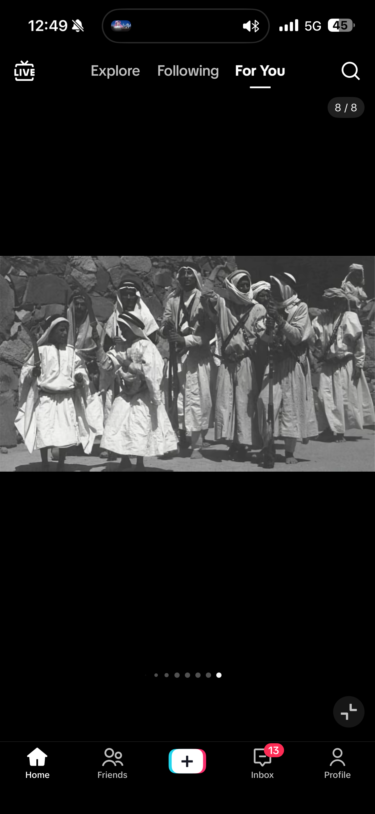

عن الشعفين
تُخصّص هذه الصفحة لكل ما يتعلق بالشعفين عامة، من النسب العام، والتقسيم، والامتداد الجغرافي، وما يتصل بهوية الشعفين ومواطنهم وموروثهم المشترك.
الشعفين (آل يزيد)
آل يزيد اسمٌ نسبي، إذ إنهم من ذرية الحارث بن شهر، وكان هذا الاسم يُطلق في القديم على معظم القبائل التي تُعرف اليوم باسم الشعفين. ومع تعاقب الزمن غلب المسمى الجغرافي على الاسم النسبي، فاشتهروا باسم الشعفين أكثر من الاسم القديم.
واسم الشعفين مأخوذ من الشعف أو الأشعاف، ويُطلق على المناطق الجبلية المشرفة على أغوار تهامة. ومن المسميات المتداولة في بلادهم: شعف آل عظاة، وشعف آل قاصلة، وشعف آل معافا، وشعف آل مروح.
التقسيم العام
تنقسم قبيلة الشعفين إلى قسمين كبيرين هما: آل محمد بن يزيد، وبنو غراب. ويتفرع من هذين القسمين عدد من القبائل والفخوذ المعروفة في تنومة وما حولها، وتُعد الشعفين من القبائل العريقة والكبيرة في بني شهر، ولها امتداد في تهامة وحضور معروف في تاريخ المنطقة.
آل محمد بن يزيد: آل مروح، آل صفوان، آل زخران، آل بن يعلا، آل عوف بن غالب.
بنو غراب: آل حسين، آل محدل، آل مجادب.
شاهد شعري
وللتدليل على شيوع اسم آل يزيد في الماضي، يُستشهد بما قاله الشاعر عامر بن رحاح من بلحصين في سبت تنومة سنة 1341هـ بعد عودة العوامر من غزوة مترك:

أهم الجبال والمواضع
من المواضع التي ورد ذكرها في المادة المحلية عن بلاد الشعفين: جبل عيسى غرب قرى آل مروح، وجبل بطنان شمال غرب بطنان، وجبل لمع رعدان الواقع وسط تنومة، ويعد حاجزًا طبيعيًا بين تنومة العليا والسفلى، وحوله طريقا عقبة آل زخران شرقًا وخرق ابن السميح غربًا. كما يُذكر جبل جلالة المشرف على المحفار، وجبل عبدالله الواقع غرب تنومة والمشرف على أغوار تهامة، ويُذكر أيضًا صدر أول بوصفه من أشهر المواضع في المنطقة.

موجز عام
الشعفين من قبائل بني شهر، وينقسمون في تنومة إلى عدد من العشائر المعروفة، وتمتد مواضعهم بين القرى الجبلية في تنومة والشعوف المطلة على تهامة، كما تتبعهم أقسام في البادية وتهامة.
الامتداد الجغرافي
تنتشر مواضع الشعفين في سبت تنومة وما حولها، وارتبط اسمهم بتاريخ السوق الأسبوعي القديم الذي عُرف بسبت تنومة أو سبت بن العريف، كما تحفظ الروايات المحلية لهم حضورًا في الجبال والشعاف والقرى المجاورة.

مدقال رجال الشعفين
مقطع مرئي يتصل بمدقال رجال الشعفين، ويُدرج هنا بوصفه جزءًا من المادة العامة المرتبطة بالموروث والهوية والوجدان المشترك عند الشعفين.
واقعة آل زخران
من أشهر وقائع بني شهر في تنومة خلال المواجهة مع القوات العثمانية، وبقيت في الذاكرة المحلية بوصفها من أكبر الوقائع التي انتهت بصلحٍ على شروط بني شهر.
واقعة آل زخران
واقعة آل زخران وقعت في تنومة بين قبائل بني شهر والقوات العثمانية في يومي الثلاثاء 13 والأربعاء 14 جمادى الأولى 1335هـ، الموافق 6–7 مارس 1917م. وكانت أرض القتال في آل زخران وضواحي تنومة، بعد أن تحركت الحملة العثمانية نحو تنومة والنماص لإخضاع بني شهر وكسر تمردهم وفرض الزكاة والسيطرة العسكرية من جديد. وتقدَّر القوة العثمانية في المصادر المتداولة بنحو 3000 إلى 3600 مقاتل.
القادة والقيادات الرئيسية
على الجانب العثماني كان محيي الدين باشا هو متصرف عسير وصاحب القرار السياسي والعسكري العام، بينما قاد الحملة الميدانية في تنومة العميد محمد أمين باشا. وكان إلى جانب الإدارة العثمانية الأمير حسن بن علي آل عائض مساعد المتصرف، كما ظهر الشيخ أحمد بن حامد شيخ قبيلة علكم في مسار الوساطة والصلح.
أما على جانب بني شهر فكان الاسم المحوري هو الشيخ شبيلي بن محمد بن العريف شيخ بني أثلة، وهو الشخصية التي فجّر اعتقالها التصعيد كله، ويبرز كذلك الشيخ فراج بن سعيد العسبلي شيخ مشايخ سلامان، والشيخ سعيد بن فايز العسبلي شيخ سلامان، والشيخ علي بن زراب الشهري الكناني شيخ كنانة من العوامر، كما ترد في روايات تنومة أسماء الشيخ فراج بن شبيلي ضمن رجال القيادة والتحشيد، والشيخ فَرّاس بن محمد آل زخران الذي تولى قيادة سرية في حصون آل زخران.


بداية القصة
ترجع بداية القصة إلى ما قبل المعركة بعدة سنوات. ففي سنة 1330هـ/1912م وقف الشيخ شبيلي بن محمد بن العريف وقبائل تنومة في وجه سليمان شفيق الكمالي ومنعوه من دخول تنومة بسهولة في طريقه إلى النماص، ثم استمرت بعد ذلك المطالبات العثمانية لقبائل بني شهر بدفع الزكوات والضرائب، لكن بني شهر رفضوا ذلك مرارًا. ومع تولي محيي الدين باشا عسير اشتد الضغط، فاستدعى الشيخ شبيلي إلى أبها، فلما حضر أمر بسجنه مع عدد من وجهاء قومه، فصار هذا الاعتقال رأس الأزمة ومفتاح الانفجار.
وفي جمادى الأولى سنة 1335هـ/مارس 1917م حشد محيي الدين باشا حملة كبيرة، واستدعى معها جماعات قبلية موالية أو مساندة، وتذكر الروايات الواردة في الكتب والمصادر المحلية أسماء من المشاركين مع الحملة مثل جماعات من قحطان وشهران ومن عسير آل موسى بن علي وبني ثوعة. وفي المقابل استنفرت قبائل بني شهر سراةً وبادية، فتمركزت العوامر وبني التيم في الجهة الشمالية الغربية من تنومة، وشهر ثرامين في الشمال الشرقي، وشهر الشام ومعهم كعب وبني كريم من بني عمرو في الجهات الأخرى المحيطة بسوق السبت وتنومة، استعدادًا لتطويق القوة المهاجمة ومنعها من التقدم.
وعندما وصلت القوات العثمانية إلى محيط تنومة، أصدر قائدها محمد أمين باشا أوامره بأخذ احتياجات الجيش من الناس بالقوة. ثم طلب حضور الشيخ فايز بن عبدالرحمن بن العريف، وهو ابن عم الشيخ شبيلي، ومعه عدد من وجهاء وأعيان تنومة بحجة التفاهم. فلما حضروا قام بأسرهم، ثم أمر بقتل فايز ومن معه وقطع رؤوسهم، وأرسل رأس فايز إلى أبها، فعُرض على الشيخ شبيلي في سجنه. وكانت هذه اللحظة الشرارة المباشرة التي نقلت الموقف من التوتر إلى الحرب الشاملة.
سير المعركة
عندها قررت قبائل بني شهر الهجوم. ففي ظهر الثلاثاء 6 مارس 1917م طوقت القوات العثمانية في تنومة وآل زخران، واشتعلت المعركة الكبرى. استخدم العثمانيون المدافع والرشاشات والبنادق، بينما قاتل بنو شهر ببنادقهم وسلاحهم التقليدي ومن مواقع جبلية ودفاعية أعطتهم أفضلية في الالتفاف والمباغتة. وتفصل الروايات المحلية أن الانتشار كان على امتداد جبل آل زخران من منعاء شرقًا إلى الربوعة غربًا، وأن قذائف المدفعية ألحقت أضرارًا ببعض منازل تنومة. وسقط في الموقعة من بني شهر أكثر من ستين شهيدًا، وجرح آخرون.
ثم في فجر الأربعاء 7 مارس 1917م وصلت إمدادات بني شهر إلى إخوانهم في تنومة، ولا سيما من بني التيم والعوامر، وتجدد الهجوم بقوة أكبر، فدارت المعركة الفاصلة. وتذكر المصادر أن القتلى من العثمانيين بلغوا أكثر من 120 عسكريًا من مختلف الرتب، بينما تصف بعض القصائد والروايات الشعبية حجم الخسارة بأرقام أكبر، لكن الثابت في المتون المتداولة أن الحصار اشتد على من بقي من القوات حتى اضطروا إلى طلب الصلح. كما تذكر روايات تنومة أن كثرة القتلى جعلت دفن بعضهم شاقًا، وأن بعض الجثث دُفنت في مواضع قريبة وآبار جافة بعد توقف القتال.
مجلس الصلح وشروطه
جاء مجلس الصلح بعد أن انكسر الهجوم العثماني ميدانيًا. وتفصل روايات تنومة أن اجتماعًا أوليًا عُقد يوم الخميس في منزل الشيخ عوض بن طلة من آل صفوان في تنومة، وحضره من رجال بني شهر الشيخ فَرّاس بن محمد آل زخران، والشيخ علي بن زراب، والشيخ بن دعبش من آل وليد، ثم رُفعت الشروط إلى أبها. وتذكر المصادر الأوسع أن الشيخ سعيد بن فايز العسبلي والشيخ علي بن زراب كانا قد ذهبا قبل المعركة بأيام يطلبان الوساطة، ثم أُنجز الصلح بعد القتال بكفالة الشيخ أحمد بن حامد شيخ علكم والأمير حسن بن علي آل عائض مساعد المتصرف.
أما شروط الصلح التي خرجت بها الموقعة، فهي: إطلاق الشيخ شبيلي ومن معه من السجن في أبها، ودفع ثلاثين ألف ريال مجيدي تعويضًا لبني شهر، وانسحاب القوات العثمانية من عموم بلاد بني شهر، وعدم دخولها تلك البلاد مستقبلًا، على أن يلتزم بنو شهر بعدم حرب العسكر العثماني خارج بلادهم. ووقع الصلح عن بني شهر الشيخ علي بن زراب، وورد في بعض المصادر مع اسم الشيخ أحمد بن حامد بوصفه ضامنًا وشاهدًا محوريًا في الاتفاق، ووقع عن الجانب العثماني متصرف عسير ومساعده حسن بن علي آل عائض. وبعد ذلك خرج الشيخ شبيلي من السجن، ووصل إلى تنومة في شعبان 1335هـ، وأقيمت له الضيافات والاحتفالات.
أبرز الأسماء في الموقعة
من أبرز الأسماء التي ترد في الموقعة من رجال بني شهر: الشيخ شبيلي بن محمد بن العريف، والشيخ فراج بن سعيد العسبلي، والشيخ سعيد بن فايز العسبلي، والشيخ علي بن زراب الشهري الكناني، والشيخ فايز بن عبدالرحمن بن العريف، وعبدالله بن عساف، وعبدالله بن غرمان، وعامر بن فهران، والخناب من آل وليد. كما ترد في روايات تنومة أسماء عوض بن طلة، والشيخ بن دعبش، والشيخ فَرّاس بن محمد آل زخران في مسار القتال والصلح وما بعد القتال.
خلاصة الوقعة
وخلاصة الموقعة أن آل زخران كانت معركة كسر إرادة لا مجرد اشتباك عابر؛ بدأت بسبب سجن الشيخ شبيلي، ثم تفجرت بعد قتل الشيخ فايز بن عبدالرحمن بن العريف ورفاقه، وانتهت بحصار القوة العثمانية في تنومة وإجبارها على الصلح بشروط بني شهر، ثم إطلاق الشيخ شبيلي وخروج الجيش العثماني من بلاد بني شهر. ولهذا بقيت الموقعة في الذاكرة المحلية واحدة من أكبر وأشهر وقائع تنومة وبني شهر ضد العثمانيين.